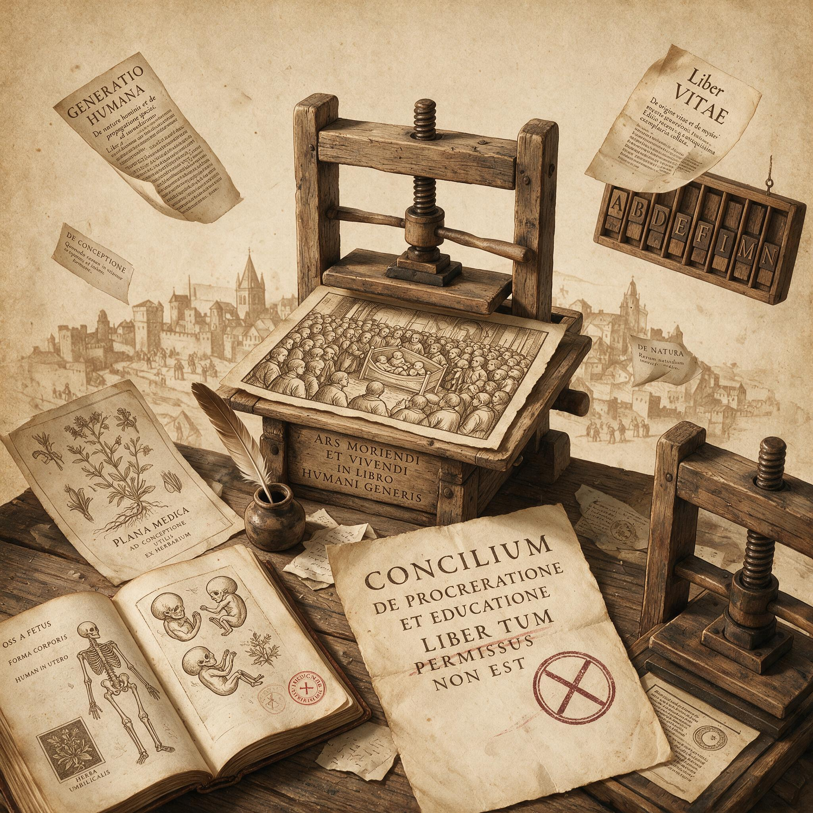

第 5 章
印刷品上的生育战争
伦敦舰队街的印刷机在1854年7月的一个傍晚轧过一张潮湿的纸。这张纸上的文字，将在接下来三十年里被翻译成十种语言，被海关官员没收，被教士在布道坛上谴责，被工人藏在工具箱夹层里带回家。印刷车间的油墨气味还没散尽，排字工人已经知道他们在印什么东西——不是通常的激进政治小册子，也不是廉价小说。
这是一本讲如何限制生育的书。作者署名“一个医生”，但真正的作者是乔治·德赖斯代尔，一个在爱丁堡受过医学教育的年轻人。他的书名叫《社会科学纲要：人口、贫困与道德》。书名听起来像一本沉闷的社会学著作，但里面的内容让维多利亚时代的英国社会在接下来的半个世纪里反复撕裂。
德赖斯代尔的论点直接而明确：工人阶级的贫困根源在于人口增长超过了工资增长，而解决之道不是慈善，不是革命，不是禁欲——是避孕。
这本小册子的出现标志着一个转折点。在此之前，避孕知识在经验暗河中流动：助产士口传给产妇，妓院老鸨教给新手，丈夫从军营同袍那里听来，妻子从邻居大嫂那里偷偷学。

印刷品上的生育战争：历史出版插图
AI 生成插图，非史实影像。
这些知识从来没有进入过公共领域，从来没有被印刷机固定成可以反复复制、可以远距离传播、可以被陌生人阅读的文本。德赖斯代尔做的事情，是把暗河里的水舀到了阳光下。但阳光下的水立刻引来了争夺。《社会科学纲要》出版后不到一年，英国各地的激进书商开始在橱窗里摆放这本售价六便士的册子。曼彻斯特的纺织工人买得起六便士，伯明翰的金属工人也买得起。这个价格是精心计算的：它比一本小说便宜，比一份周报贵一点，正好卡在一个熟练工人愿意为实用知识支付的价位上。德赖斯代尔和他的追随者——他们自称“新马尔萨斯主义者”——不是在写学术论文，他们在打一场价格战。
新马尔萨斯主义这个名称本身就携带着一段需要解释的历史。托马斯·罗伯特·马尔萨斯在1798年发表《人口论》，提出人口以几何级数增长、食物以算术级数增长，贫困是人口压力的必然结果。马尔萨斯的解决之道是“道德抑制”——晚婚、婚前的绝对禁欲。他痛恨避孕，称之为“不道德的手段”。
但到了1820年代，一批激进思想家——弗朗西斯·普莱斯、理查德·卡莱尔、罗伯特·戴尔·欧文——开始公开主张：如果贫困的根源是人口压力，那么用避孕手段来限制生育，比马尔萨斯要求的终身禁欲更实际，也更人道。这就是“新马尔萨斯主义”的由来：它继承了马尔萨斯的人口压力分析，但拒绝了他的道德解决方案。它主张的不是禁欲，而是技术干预。
这个立场转变的后果是深远的。马尔萨斯本人可以在教堂里讨论人口问题，因为他的结论是道德规训——晚婚、克制、自律。但新马尔萨斯主义者的结论是技术操作——冲洗、海绵、橡胶器具。前者是道德家可以接受的苦难，后者是道德家必须镇压的淫秽。
德赖斯代尔的小册子在1860年代和1870年代持续再版。每一次再版都引发新一轮的论战和查禁威胁。但印刷机一旦开动，知识就获得了物质形态的耐久性。一本小册子可以被没收，但同一块印版可以再印一千本。一个书商可以被起诉，但另一个城市的另一个书商会接替他的位置。
印刷品不像口传知识那样依赖特定的人际关系网络——它可以跨越空间、跨越阶级、跨越时间，在完全不认识的人之间建立信息传递。
1877年，一场决定性的对抗在伦敦上演。查尔斯·布拉德洛和安妮·贝赞特——两个公开的世俗主义者和政治激进分子——决定重新出版一本美国小册子《哲学的果实：年轻已婚者的私密伴侣》。这本小册子最初由美国医生查尔斯·诺尔顿在1832年写成，详细描述了多种避孕方法，包括阴道冲洗和杀精溶液。诺尔顿的书在美国已经引发过诉讼，但布拉德洛和贝赞特认为，英国的法律环境有所不同，他们可以利用这次出版来测试审查制度的边界。他们错了。
1877年4月，布拉德洛和贝赞特在伦敦被捕，被控“出版淫秽诽谤性文字”。审判在旧贝利刑事法庭进行，持续了四天。检察官的论点很明确：任何描述避孕方法的文字，无论其意图如何，都是淫秽的，因为它涉及了不应该被公开讨论的身体行为。
布拉德洛和贝赞特为自己辩护，他们的论点同样明确：如果工人阶级妇女因为缺乏知识而不断怀孕、不断陷入贫困、不断看着自己的孩子死去，那么阻止这种知识传播才是真正的淫秽。法庭上的陈述记录在案。贝赞特在辩护中说，她收到过无数工人阶级妻子的来信，描述她们如何在连续生育中耗尽体力、如何在贫困中埋葬孩子。这些信件没有在法庭上宣读——法官裁定它们与案件无关。但贝赞特在审判结束后把这些信件编成了一份新的小册子，在法庭外散发。
审判本身变成了一个传播事件。陪审团做出了有罪裁决，但技术性细节让判决在上诉中被推翻。布拉德洛和贝赞特没有被监禁，但他们的书商被处以罚款。然而，审判期间报纸对案件的大量报道，已经让《哲学的果实》的内容——以及它所描述的避孕方法——传播到了比任何小册子本身所能到达的更广泛的受众。
伦敦的日报可能不会直接引用书中的技术描述，但它们会提到“预防受孕的方法”“限制家庭规模的措施”“那些被指控为淫秽的段落”——这些暗示本身就成了路标，告诉读者存在这样的知识，以及在哪里可以找到它。这就是审查的悖论：试图压制一种知识，首先要定义它、描述它、把它带入公共讨论。每一次审判都是一次公开课。每一个被查禁的书名都变成了广告。
康斯托克将会在美国更彻底地证明这个悖论，但在英国，布拉德洛-贝赞特审判已经给出了清晰的案例：1877年之后，《哲学的果实》在英国的销量不是下降了，而是上升了。审判前，这本小册子已经印刷了约四万册；审判后的十年里，它卖出了超过二十万册。
但审判也改变了辩论的格局。在1877年之前，新马尔萨斯主义者主要在人口学和贫困问题上论证避孕的必要性。审判之后，他们不得不越来越多地在法律和道德领域为自己辩护。辩论的中心从“避孕是否能解决贫困”转向了“避孕知识是否应该被公开讨论”。
第一个问题可以诉诸统计数据和社会调查，第二个问题则直接撞上了维多利亚时代的道德秩序。教会的反应是迅速而猛烈的。英国国教的主教们在布道坛上谴责新马尔萨斯主义是“对上帝律法的公然违抗”。天主教会则更加系统地反对任何形式的人工避孕。但宗教反对的声音在工人阶级中的实际效果是有限的。英国工业城市的教堂出席率在19世纪后期持续下降，教会对工人阶级行为的道德约束力远不如它对中产阶级的约束力。当主教在曼彻斯特的布道坛上谴责避孕时，下面坐着的纺织工人可能并不在场——他们可能正在读一本六便士的小册子，或者听一个激进演讲者在街头讲述“人口问题”。
在大西洋彼岸，一场更系统、更持久的审查战争正在展开。安东尼·康斯托克不是主教。他是一个纽约干货商人，一个内战老兵，一个在青年时期因手淫而陷入深深道德焦虑的人。1873年，他说服美国国会通过了《禁止交易和传播淫秽物品及不道德用途物品法》——后世简称为“康斯托克法”。
这部法律将避孕信息和避孕器具与淫秽物品归为同一类别，禁止通过美国邮政传播。违反者面临最高五千美元罚款和十年监禁。康斯托克本人被任命为邮政部的特别检查员，拥有执行这部法律的广泛权力。在接下来的四十年里，他声称自己查获了超过一百六十吨的“淫秽物品”，摧毁了超过十六万件“橡胶制品”，并导致了至少十五个人的自杀——那些被他起诉的书商、医生和出版商，在面临公开羞辱和监禁威胁时选择了结束自己的生命。
康斯托克法的文本值得仔细阅读。它禁止传播“任何淫秽、猥亵、淫荡或不道德性质的书籍、小册子、图片、纸张、信件、文字、印刷品或其他出版物”。但什么是“不道德用途”？法律没有明确定义，这给了康斯托克极大的解释空间。在他的理解中，任何与避孕相关的信息——无论是医学教科书、婚姻指导手册、还是激进政治小册子——都属于“不道德用途”的范畴。他甚至起诉过一本解剖学教科书，因为书中有生殖系统的插图。
1878年——布拉德洛-贝赞特审判的第二年——康斯托克在纽约查获了一批从英国运来的《哲学的果实》。这批书本来要寄给一位名叫爱德华·布利斯·富特的医生，他是美国最早的生育控制倡导者之一。康斯托克亲自到邮局拦截了包裹，然后以邮寄淫秽物品的罪名逮捕了富特。富特在审判中辩称，他的工作是为了帮助已婚妇女避免不必要的怀孕，这是一种医学服务而非淫秽行为。陪审团不同意。富特被罚款，他的行医执照被吊销，他的诊所被迫关闭。
但康斯托克的行动并没有阻止《哲学的果实》在美国的流通。相反，它迫使这本书转入地下，而地下流通网络在比公开销售更有效率。印刷商学会了不在书上印自己的真实地址。书商用假名邮寄包裹。客户通过口传网络找到供应商，交易完全绕过邮政系统，改用私人递送或当面交接。康斯托克法制造了一个悖论：它切断了合法渠道，却强化了非法渠道；它增加了获取知识的成本，但也增加了知识的稀缺价值；它让避孕信息变得更危险，但也因此变得更诱人。
更重要的是，康斯托克法把避孕知识推入了政治议程。在1873年之前，美国的生育控制倡导者主要是医生和自由思想家，他们的活动局限于专业圈子和小众出版物。康斯托克的全国性审查运动把这个问题推到了报纸头版。每一次审判都是一次新闻报道事件。每一个被起诉的医生都变成了言论自由的殉道者。
康斯托克以为自己在消灭淫秽，实际上他在为避孕知识做广告——而且是免费的、全国性的广告。这种动态在1880年代和1890年代反复上演。康斯托克起诉了堪萨斯州的一位医生，因为他在医学杂志上描述了避孕方法——结果那期杂志的需求量激增，出版商不得不加印。康斯托克查禁了一本名为《婚姻卫生》的小册子——结果它的作者立即出版了第二版，并在序言中感谢康斯托克“慷慨的推广”。康斯托克在波士顿突袭了一家书店，没收了所有与生育控制相关的书籍——结果当地报纸详细报道了突袭行动，列出了被没收的书名，无意中为读者提供了一份阅读清单。1890年代，美国的人口结构正在发生深刻变化。
土生土长的白人新教徒家庭的生育率持续下降，而来自南欧和东欧的天主教移民家庭的生育率则保持在高位。这种差异引发了一种新的人口焦虑：不是马尔萨斯式的人口过剩焦虑，而是种族和民族意义上的人口替代焦虑。康斯托克的审查运动在这种焦虑中获得了一种新的政治支持：限制避孕知识传播，不仅是为了维护公共道德，也是为了确保“真正的美国人”不会因为生育率过低而被移民后代淹没。
这种焦虑在法国以另一种形式出现。法国的人口轨迹在19世纪是独一无二的。当英国和德国的人口在工业革命期间快速增长时，法国的人口增长率却从19世纪初就开始放缓。到1870年普法战争前夕，法国的出生率已经低于死亡率——如果不考虑移民，法国人口实际上在萎缩。1870年战争的惨败加深了这种焦虑：法国输给了一个人口增长更快、士兵更多的德国。战后的法国知识分子和政治精英开始公开讨论一个令人不安的问题：法国正在经历“民族自杀”。“民族自杀”这个词在1890年代成为法国公共辩论的核心隐喻。
它出现在学术论文、议会辩论、报纸社论和小说中。它的含义是明确的：法国人正在通过限制生育来毁灭自己的民族。避孕——以及更广泛的生育控制实践——被从私人道德领域拉进了国家生存的政治领域。一个拒绝生育的法国妇女不再只是一个违背宗教教义的个人，她是一个背叛民族命运的叛徒。
法国的人口学家在19世纪最后三十年里积累了令人印象深刻的数据。他们分析了各省的出生率差异，发现富裕省份的出生率低于贫困省份，城市低于农村，有产阶级低于工人阶级。这种模式与马尔萨斯的预测完全相反：马尔萨斯认为贫困会导致高生育率，但法国数据显示，富裕和受教育程度更高的群体反而生育更少。这意味着避孕实践——无论采取什么具体形式——正在沿着阶级和教育的梯度扩散。法国政府面临一个困境。一方面，天主教会和保守派政治力量要求国家采取行动，禁止避孕宣传，惩罚堕胎行为，鼓励大家庭。另一方面，共和派传统中的反教权主义和个人自由理念，使国家对干预私人生活持谨慎态度。
结果是一种摇摆的政策：国家通过税收优惠和道德劝说来鼓励生育，但迟迟没有采取像美国康斯托克法那样严厉的审查措施。这种摇摆为公共讨论留出了空间。法国的人口学家、社会学家和医生在19世纪末和20世纪初发表了一系列关于生育控制的研究和辩论。
这些讨论不像英国那样集中在工人阶级贫困问题上，也不像美国那样陷入道德审查的拉锯战——法国的讨论更多地围绕民族命运、文明衰退和人口政治展开。避孕被放在一个更大的问题框架内：一个现代社会是否可以在不维持高生育率的情况下保持其活力和竞争力？这个问题没有简单的答案，但它把避孕从道德神学领域转移到了人口科学领域。一旦生育控制成为可以量化、可以统计、可以比较的研究对象，它就不再仅仅是“淫秽”或“不道德”的问题——它变成了一个需要政策回应的人口事实。这个转变是关键的：它意味着国家开始把公民的生育行为视为治理对象，而不仅仅是私人道德问题。
1896年，法国统计学家雅克·贝蒂永发表了一份关于法国生育率下降的报告，使用了“dénatalité”（去生育化）这个词来描述法国的趋势。这个词迅速进入了公共词汇。贝蒂永的数据显示，法国每个已婚妇女的平均生育数从19世纪初的约四点五个孩子下降到了1890年代的约二点五个孩子。在某些巴黎市区，这个数字甚至低于两个。贝蒂永警告说，按照这个趋势，法国将在20世纪失去其作为欧洲大国的地位。
贝蒂永的报告引发了一场全国性辩论。天主教会的主教们引用这些数据来证明避孕的罪恶正在摧毁法国。新马尔萨斯主义者——他们在法国也有自己的组织，以保罗·罗班为代表——则反驳说，问题不是生育太少，而是贫困家庭生育太多，导致婴儿死亡率高企和社会资源浪费。罗班在1896年创办了《生育意识》杂志，公然在法国传播避孕知识，并因此多次面临起诉。但法国的法律环境与英美有所不同。
法国的出版审查制度在1881年新闻自由法通过后相对宽松，对“淫秽”的定义也不像康斯托克法那样宽泛。罗班的杂志虽然不断受到法律骚扰，但从未被彻底查禁。它在法国的工人阶级和中产阶级读者中都有一定的影响力，特别是它把避孕知识包装在“科学”和“理性”的语言中，而不是激进政治的语言中。罗班自称是一个“人口经济学家”，而不是一个道德改革者。
这种策略是精心选择的。在英国，布拉德洛和贝赞特以言论自由和世俗主义为旗帜，把避孕问题变成了意识形态战场。在美国，康斯托克法把避孕知识推入了道德犯罪的地下世界。在法国，新马尔萨斯主义者试图走一条不同的路：他们用人口统计数据、死亡率表格和经济学论证来包装避孕知识，试图让它看起来像一种技术性的社会政策工具，而不是一种道德越轨行为。
这三种路径产生了不同的历史后果。英国的激烈公共辩论把避孕问题政治化了，使它成为工人阶级运动和妇女权利运动的一部分。
美国的严厉审查把避孕知识推入了地下，但也创造了一种反抗审查的自由主义叙事，这种叙事在20世纪的法律改革中发挥了重要作用。法国的“科学化”策略虽然避免了最激烈的对抗，但也使避孕问题在法国长期处于一种灰色地带——不被公开承认，但也不被彻底禁止，在实践中广泛存在但缺乏法律保护。
回到印刷品本身。这三种路径都依赖同一种技术基础：印刷机的复制能力。没有廉价的纸张、快速的印刷和可靠的邮政系统，新马尔萨斯主义者的知识传播运动就不可能展开。19世纪中后期的印刷技术革命——蒸汽驱动的轮转印刷机、木浆纸的工业化生产、铁路邮政网络的扩展——使小册子可以以极低的成本大量生产并广泛分发。一本六便士的小册子包含的信息，以前只能通过私人交谈或手抄文本获得，现在可以在几天内到达全国各地的读者手中。
印刷品的另一个特性同样重要：它把知识固定为文本，使它可以被引用、被反驳、被审查、被审判。口传知识是流动的、可变的、难以追踪的。
一个助产士告诉一个产妇如何冲洗，这句话消失在空气中，没有留下法律证据。但一本印刷的小册子留下了物质痕迹——它可以被警察从邮局查获，被检察官在法庭上展示，被法官逐字逐句地审查。印刷品使避孕知识变得可见，而可见性既带来了传播效率，也带来了法律风险。康斯托克在纽约邮政局的仓库里堆积的查禁物品，是这种可见性的物质证据。
那些封存在木架上的包裹——橡胶器具、小册子、医学手册——不是被销毁了，而是被保留作为法律证据。它们构成了一个奇特的历史档案：国家机器通过收集和保存“淫秽物品”来证明自己的执法效率，但在这个过程中，它也为后世留下了关于19世纪避孕实践的实物记录。康斯托克以为他在消灭这些东西，实际上他在为它们建立档案。
在法国，印刷品的流通方式有所不同。由于没有像康斯托克法那样严密的邮政审查，法国的避孕小册子可以通过正常的书店渠道销售，尽管它们通常被放在柜台下面而不是橱窗里。
巴黎的塞纳河畔书摊——那些著名的绿色铁皮箱子——是地下知识流通的重要节点。一个顾客可以假装在浏览旧书，然后低声向摊主询问是否有“卫生手册”。摊主会从箱子底部抽出一本薄薄的小册子，交易在几秒钟内完成，没有收据，没有记录。这种半地下的流通模式意味着，法国的避孕知识传播不像英国那样戏剧化——没有轰动性的审判，没有殉道式的被告——但可能更持久、更深入。
到1900年，法国的生育率已经是欧洲最低的之一，这表明避孕实践在法国社会中的渗透程度远远超过了公共讨论所承认的范围。人们在私下里做着他们不在公开场合讨论的事情。印刷品提供了知识，但没有提供合法性；实践在扩散，但羞耻感仍然附着在它上面。
这种分裂——私下实践与公开沉默之间的分裂——是19世纪末避孕问题的核心特征。印刷品打破了这种分裂的一角，但没有彻底消除它。新马尔萨斯主义者的小册子告诉读者如何避孕，但它们没有告诉读者如何公开谈论避孕而不感到羞耻。知识传播了，但合法性没有同步传播。
这种不对称将在20世纪初产生一系列新的冲突：当女性开始要求不依赖男性配合的避孕手段时，她们不仅需要技术知识，还需要一种新的道德语言来为这种要求辩护。1899年，康斯托克在纽约起诉了一位名叫安·洛曼的女医生，罪名是通过邮件传播避孕信息。洛曼在法庭上辩称，她只是在回应病人的咨询，提供医学建议。康斯托克则坚持认为，任何关于避孕的书面交流都构成违法。陪审团再次站在康斯托克一边。洛曼被罚款，她的行医资格受到威胁。
但在法庭外，洛曼的案子引发了不同的反应。纽约的报纸报道了这个案件，一些社论开始质疑康斯托克法的合理性。一位评论者写道：“如果一个已婚妇女因为健康原因不能怀孕，她的医生是否应该被允许告诉她如何避免怀孕？康斯托克先生的回答是‘不’。常识的回答是‘是’。”
这种常识论证虽然在1899年还不足以改变法律，但它标志着一个缓慢的转变：越来越多的人开始认为，避孕知识属于医学范畴而不是淫秽范畴，国家对它的干预应该有限度。这个转变将在20世纪初加速。
印刷品上的生育战争在19世纪末达到了它的第一个高潮——布拉德洛-贝赞特审判、康斯托克审查运动、法国的“民族自杀”辩论——但这些冲突都没有解决根本问题。避孕知识仍然处于合法与非法的灰色地带，仍然被道德禁忌包围，仍然主要依靠地下网络流通。但一个关键的变化已经发生：这个问题已经进入了公共领域，已经被印刷机固定为文本，已经引发了法律、医学、人口学和道德的多重辩论。它不可能再被推回暗河。
1900年，巴黎世界博览会开幕。在各国展馆展示工业文明成就的同时，法国人口学家在博览会期间组织了一场关于“人口衰退”的学术会议。与会者讨论了生育率下降的原因和后果，有人提到了避孕实践的作用，有人呼吁政府采取鼓励生育的政策。会议记录后来被印刷出版，成为人口学文献的一部分。同一年，康斯托克在纽约的办公室里整理他那一年的查禁记录。他统计了查获的“淫秽物品”数量，准备向国会报告他的执法成果。
在他的清单上，“橡胶制品”和“避孕书籍”被列在同一栏里，与“淫秽图片”和“不道德小说”并列。康斯托克坚信他在做上帝的工作。同一年，伦敦的一家印刷厂正在准备《哲学的果实》的新版本。排版工人把诺尔顿的文字重新铸成铅字，印刷机的滚筒再次转动。这本已经引发过审判、被多国查禁、被翻译成多种语言的小册子，即将开始它在20世纪的新一轮传播。它的封面仍然印着“仅供已婚者阅读”的警告——这是一种法律保护，也是一种营销策略。
印刷机不知道道德，不知道法律，不知道国界。它只知道复制。只要有人愿意排版、印刷、发行，知识就会继续流动。国家可以没收一千本小册子，但只要印版还在，第一万零一本就会出现在某个邮局，等待一个签收包裹的女人。她在柜台前的犹豫，是这场生育战争最安静的战场。